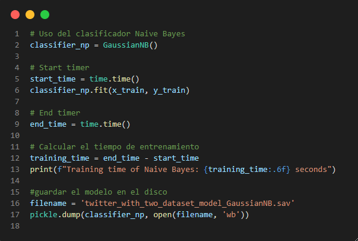

Naïve-Bayes (NBC)

Es uno de los algoritmos más simples y poderosos para la clasificación basado en el Teorema de Bayes con una suposición de independencia entre los predictores.

Con este algoritmo clasificador, se calcula la probabilidad de cada estado
de los valores de entrada, comparando con los valores de los estados de
predicción.